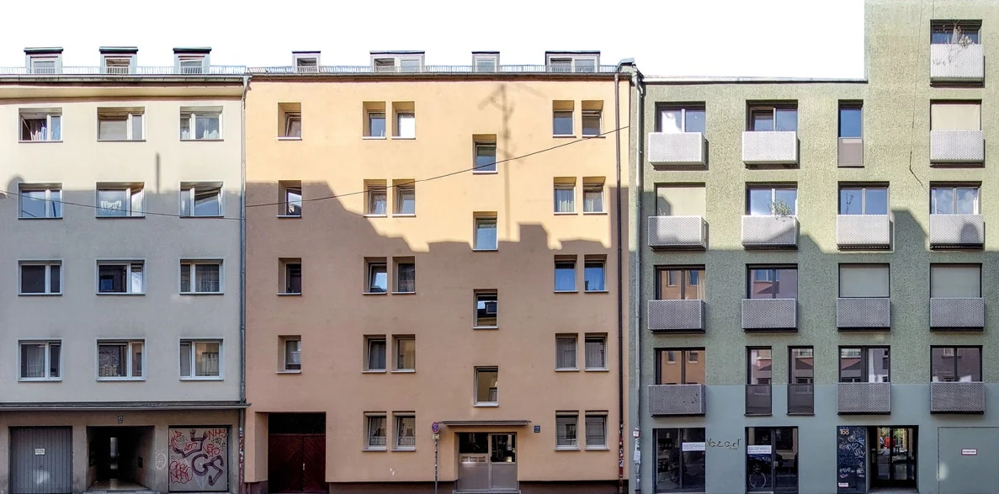

Academic work · Housing
Just Wallpaper
A survey of an apartment building on Schwanthalerstraße maps its existing rooms and structure to understand which changes the building can accommodate.

- Location
- Schwanthalerstraße 170, Munich
- Context
- Hochschule München · Academic project
- Term
- Winter 2024/25
The drawing
The plans and section make it possible to read the apartment layouts alongside the building’s overall structure.
 Enlarge drawing
Enlarge drawing
The space
The existing façade puts the proposed changes in the context of the buildings on either side.
